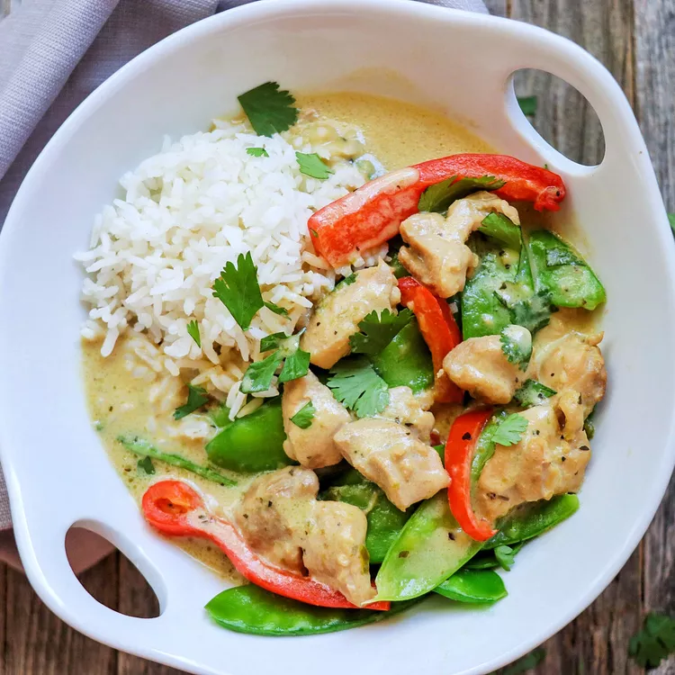

Green Curry

Description
Thai green curry paste is made with aromatic ingredients like cilantro, lemongrass, garlic, and chillies, meaning cooking up a pot of green curry will fill your home with a lovely scent. You can make your own green curry paste at home or buy it from well-stocked grocery stores. Perfectly spicy, but with a hint of sweetness and plenty of creaminess, these Thai green curry recipes will add international flair to your dinner table. Try one of our flavorful recipes, ranging from chicken to tofu to prawns, for a bold meal.
Ingredients
- 1 tablespoon dark soy sauce
- 1 tablespoon all-purpose flour
- 1 pound skinless, boneless chicken breast halves - cut into 1 inch cubes
- 2 tablespoons cooking oil
- 2 tablespoons green curry paste
Steps
- Pour 1 tablespoon soy sauce into a shallow dish. Place 1 tablespoon flour into a separate shallow dish. Toss chicken pieces in soy sauce, then in flour, coating pieces evenly.
- Heat oil in a large skillet over medium-high heat. Add chicken; cook and stir until browned, about 5 minutes. Transfer chicken to a plate; set aside.
- Reduce heat to medium and stir in curry paste. Cook for 1 minute until fragrant. Add green onions, garlic, and ginger; cook an additional 2 minutes.
- Return chicken to the skillet, stirring to coat with curry paste. Stir in coconut milk, sugar, fish sauce, and remaining 1 tablespoon soy sauce; simmer over medium heat until chicken is tender and cooked through, about 20 minutes. Serve curry with cilantro leaves.
Did you end up making this? How did it taste?!